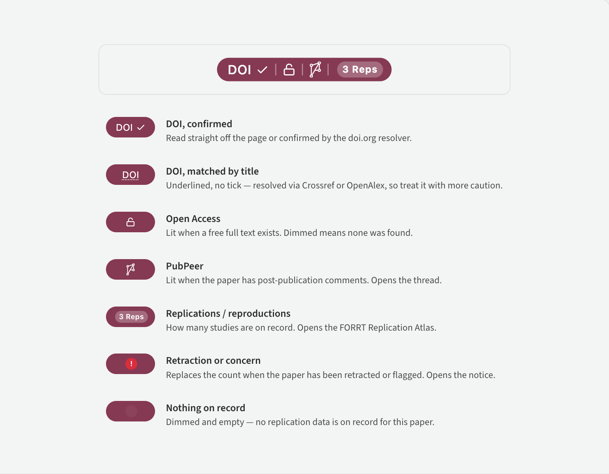
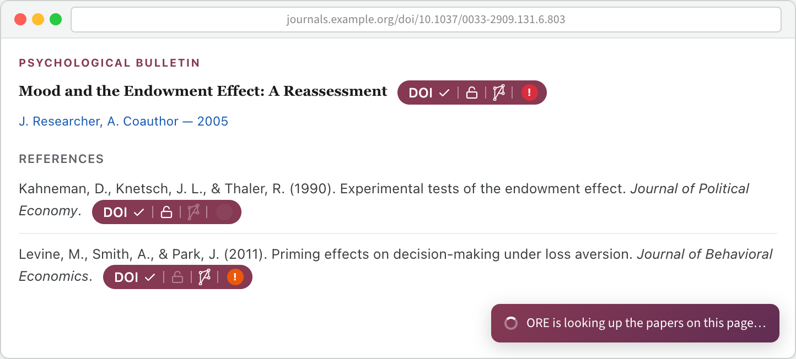
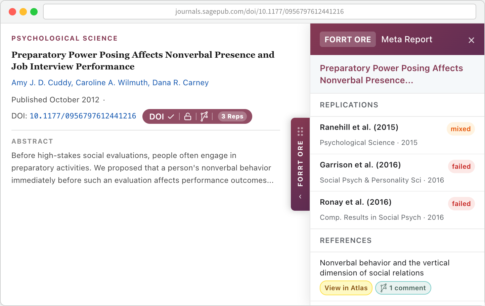
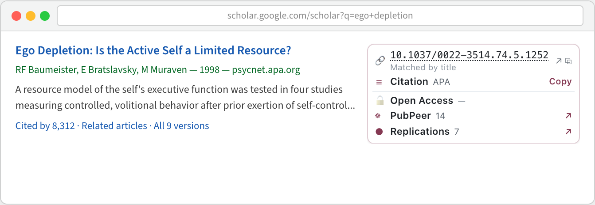
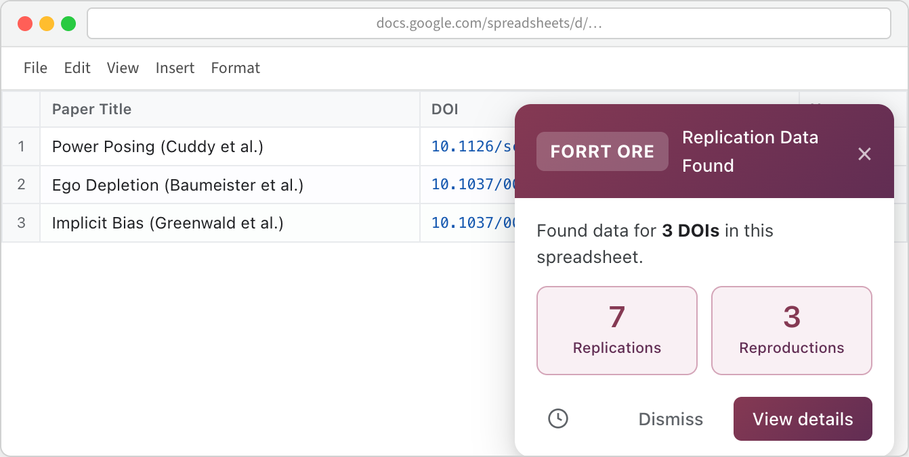
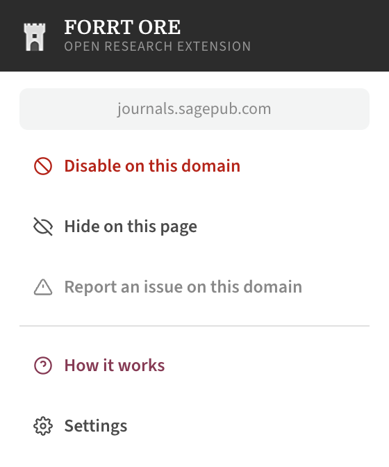
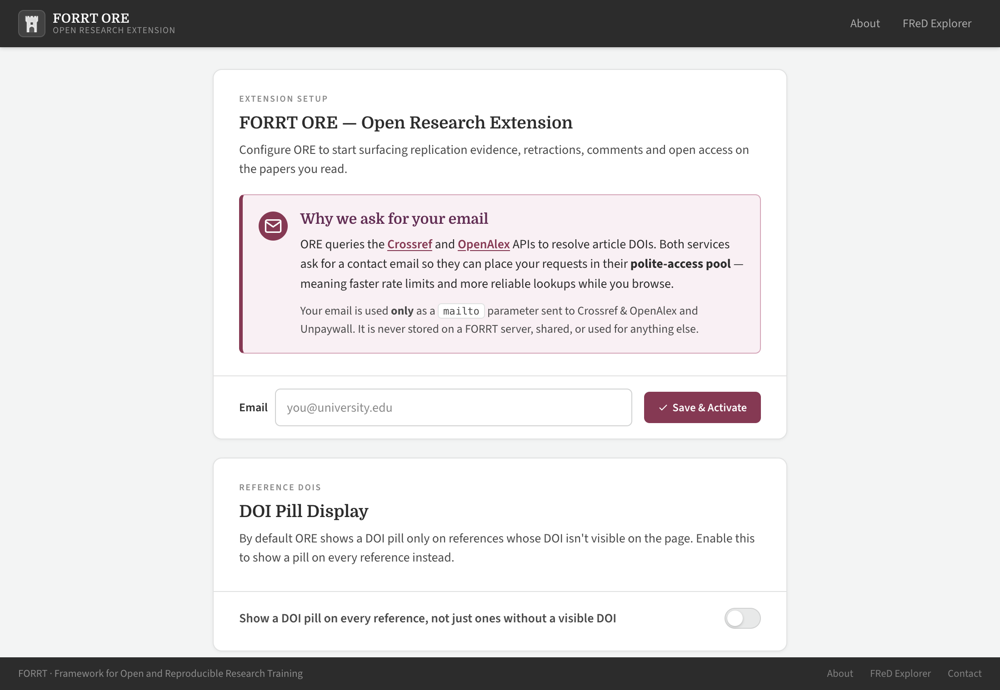

What you see
One small pill appears next to each paper ORE recognises. The pill keeps its shape while lookups are still running, so nothing jumps around as results arrive.
One pill, four signals
Left to right: whether the DOI was confirmed or matched by title, whether a free full text exists, whether the paper is discussed on PubPeer, and how many replications or reproductions are on record. A dimmed segment means nothing was found for that signal — it never disappears. A red or amber dot replaces the count when the paper has been retracted or flagged with an expression of concern.

On the article, and on every reference
On journal and preprint pages, a pill sits next to the article's own DOI and next to the references below it, so you can see at a glance which of the works a paper builds on have been replicated — or retracted.

The Meta Report panel
A draggable ORE tab sits at the edge of the page. Open it for the full picture: every known replication and reproduction colour-coded by outcome, retraction and concern notices, and which of the paper's references have their own entry in the FLoRA Replication Atlas or a PubPeer thread. If the paper you are reading is itself a replication, the panel shows the original study instead.

Where it works
ORE runs on any page that mentions papers. Three places get purpose-built treatment.
Google Scholar
Each result gets a panel with its DOI, a one-click citation in
the style you chose, open-access status, PubPeer comment count
and replication count. When the DOI comes from a
doi.org link or the doi.org resolver, the panel
reads “Found on this page”.
When a result carries no DOI at all, ORE resolves it through Crossref and OpenAlex title search and labels it “Matched by title”, with the DOI underlined — a match to check rather than trust.

Google Sheets
Open a spreadsheet of papers — a screening sheet, a reading list, a reference export — and the whole sheet is scanned, including rows below the fold, with a summary of what was found.

PubMed, publishers, preprint servers, anywhere else
The general content script reads DOIs from meta tags, JSON-LD, links, tables and visible text, and follows single-page navigations so the pills stay in step as you click through a site. Publisher-specific placement rules keep pills where they belong on the sites researchers use most.
Your controls
ORE is meant to sit quietly in the background. When it does not, you can turn it down.
Per-site switches
The toolbar popup hides ORE on the current page, disables it for the whole domain, or reports a placement problem on that site. Disabled domains are remembered in your settings.

Settings
Set the contact email that Crossref, OpenAlex and Unpaywall ask for, choose your citation style, decide whether every reference gets a DOI pill or only the ones without a visible DOI, cap how much cache is kept, manage the domain blocklist, and mute PubPeer commenters you would rather not see.

Install
ORE is not on the Chrome Web Store yet, so it is installed as an unpacked extension. It works in Chrome and Edge (version 116 or later).
-
Download
flora-extension.zipfrom the releases page — it is built automatically from the latest code. - Unzip it to a folder you will keep (deleting it uninstalls the extension).
- Open
chrome://extensionsoredge://extensions. - Turn on Developer mode, top right.
- Click Load unpacked and select the unzipped folder.
- Enter your email address on the settings page that opens. Crossref, OpenAlex and Unpaywall ask for a contact address so they can put your lookups in their faster “polite” pool; titles cannot be resolved to DOIs without it.
Building from source instead? See the
README
— npm install && npm run build, then load the
repository root as an unpacked extension.
Privacy, briefly
ORE has no accounts, no analytics and no tracking. What leaves your browser is paper identifiers — DOIs — and the contact email you entered in settings, which goes to Crossref, OpenAlex and Unpaywall as the address they ask for. Retractions are checked entirely on your own machine against a list downloaded once a week, so no DOI is ever sent anywhere to ask “was this retracted?”.
Data sources
| What | Source |
|---|---|
| Replications and reproductions | FORRT Replication Database, surfaced through the FLoRA Replication Atlas |
| Retractions and expressions of concern | Retraction Watch / The Center for Scientific Integrity, released with Crossref under CC BY 4.0 |
| Title → DOI resolution and citations | Crossref and OpenAlex |
| Open-access full text | Unpaywall, plus PubMed Central for PMC-hosted articles |
| Post-publication comments | PubPeer |
Something looks wrong?
A pill is in the wrong place
Use “Report an issue on this domain” in the toolbar popup, or open an issue with the URL. Publisher layouts change often and each site is fixed individually.
A DOI matched the wrong paper
Title matches are marked with an underline and no tick precisely because they can be wrong. Please report the case — it helps tune the matching threshold.
A replication is missing
The evidence comes from the FORRT Replication Database, which is community-curated. You can contribute an entry.
Nothing appears at all
Check that an email is set in Settings, that the domain is not on your blocklist, and that the page actually names a DOI or a paper title.